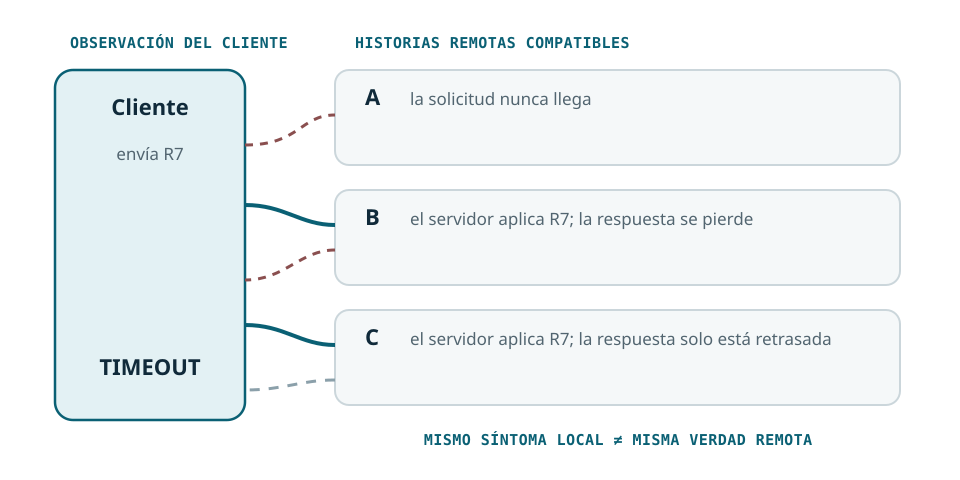

Pensar en sistemas distribuidos — Lección
Parte I — Fundamentos y arquitectura
Pregunta guía: ¿Qué cambia cuando una operación atraviesa un límite de fallo independiente?
Antes de leer
Sección titulada «Antes de leer»Un cliente agota su tiempo de espera después de enviar una actualización. Enumera tres ejecuciones en las que el servidor no hizo nada y tres en las que sí modificó su estado.
Escribe primero una respuesta breve. No necesitas acertar todavía: necesitas una predicción que puedas revisar a medida que el capítulo te dé mejores modelos y evidencia.
Usa lo que ya sabes: Procesos, sockets, latencia y llamadas locales ordinarias a funciones vistos en Sistemas Operativos y Redes de Computadoras.
Mapa de carga de trabajo
Sección titulada «Mapa de carga de trabajo»Banco de práctica / reto: Las páginas de práctica guiada y comprobación identifican los casos esenciales exactos. Los casos restantes, las extensiones opcionales y las referencias avanzadas no forman parte de la carga esencial salvo que el profesor los asigne.
SIN CONEXIÓNDescargar lección + práctica + laboratorio para estudio sin conexión (.zip · 65 KB)
Por qué importa este capítulo
Sección titulada «Por qué importa este capítulo»Un programa que funciona perfectamente dentro de un proceso puede volverse incorrecto cuando su cálculo y su estado se reparten entre participantes que fallan de manera independiente.
Una llamada local:
result = service.update(x)puede convertirse en:
result = remote_service.update(x)La sintaxis apenas cambia. La semántica sí.
Una llamada local puede retornar, lanzar un error, bloquearse o desaparecer con el proceso. Una operación remota añade red, otro scheduler, otro proceso, otro reloj, otro dominio de fallo y, sobre todo, incertidumbre sobre lo ocurrido después de que el mensaje abandonó al cliente.
La respuesta importante no es «se vuelve más lento». Cambian el estado, la comunicación, el orden, los fallos y el conocimiento disponible en cada participante.
1. Empieza por el sistema distribuido más pequeño
Sección titulada «1. Empieza por el sistema distribuido más pequeño»Dos procesos ya bastan:
Cliente Servidor
│ │
│ -------- solicitud ---------> │
│ │ calcula
│ <------- respuesta --------- │Hay al menos tres grupos de estado.
Estado del cliente
Sección titulada «Estado del cliente»- operación deseada;
- request ID;
- timeout;
- política de reintento;
- creencia sobre si la operación terminó.
Estado del servidor
Sección titulada «Estado del servidor»- si recibió la solicitud;
- si comenzó la ejecución;
- si terminó;
- si cambió estado durable;
- si envió respuesta.
Estado de comunicación
Sección titulada «Estado de comunicación»- si se entregaron los bytes;
- cuánto tardaron;
- si existe conexión;
- si se entregaron los bytes de respuesta.
Ningún participante puede observar todo eso atómicamente. La ausencia de una observación global perfecta es una dificultad central.
2. Distribución no es lo mismo que paralelismo
Sección titulada «2. Distribución no es lo mismo que paralelismo»Paralelismo
Sección titulada «Paralelismo»Varias computaciones se ejecutan simultáneamente para acelerar trabajo.
un programa
├── núcleo 1
├── núcleo 2
└── núcleo 3Pueden compartir memoria y dominio de fallo.
Distribución
Sección titulada «Distribución»Varios componentes con ejecución independiente cooperan mediante comunicación.
proceso A proceso B proceso C
│ │ │
└────── red / mensajes ──────────┘Un sistema distribuido puede ser paralelo, pero no tiene que serlo.
Detente y predice. Ocho goroutines actualizan un mapa protegido por un mutex. ¿Es automáticamente un sistema distribuido? No. Comparten espacio de direcciones y el mutex puede proteger directamente esa memoria.
3. Memoria independiente cambia la coordinación
Sección titulada «3. Memoria independiente cambia la coordinación»Dentro de un proceso, dos funciones pueden coordinarse mediante una variable compartida.
Entre máquinas no existe una variable ordinaria que ambas CPU lean y escriban atómicamente.
Nodo A Nodo B
estado_A estado_B
│ │
└──────── mensajes ───────┘Si A quiere que B conozca algo, la información debe cruzar un límite de comunicación o ambos deben depender de un tercer servicio.
Coordinación distribuida = comunicación + transiciones de estado bajo fallo.
Un mutex local no puede impedir directamente que otra máquina tome una decisión incompatible.
Más adelante usarás líderes, leases, quórums, consenso, transacciones, CRDT y coordinación específica de la aplicación.
4. No existe un único reloj perfectamente compartido
Sección titulada «4. No existe un único reloj perfectamente compartido»Supón:
10:00:00.120 Nodo A envía R
10:00:00.090 Nodo B recibe R¿Recibió B el mensaje antes de que A lo enviara? No. Los timestamps pertenecen a relojes distintos.
El mensaje crea una relación causal aunque los valores físicos resulten engañosos.
lectura de reloj local ≠ orden universal de eventosEsto importa para depuración, conflictos, leases, transacciones, medición y auditoría. El Capítulo 6 lo formaliza con happened-before, Lamport y relojes vectoriales.
5. La comunicación tiene retardo y ese retardo varía
Sección titulada «5. La comunicación tiene retardo y ese retardo varía»Una operación remota incluye:
serialización
+
planificación local
+
transporte/red
+
planificación remota
+
ejecución del servidor
+
ruta de respuestaEl cliente observa principalmente el tiempo total hasta respuesta o timeout.
Una respuesta que suele tardar 2 ms puede tardar 200 ms por colas, scheduling, GC, almacenamiento, retransmisiones, sobrecarga, dependencias o failover.
La variabilidad deja de ser «solo rendimiento» cuando un timeout obliga a decidir si esperar, fallar o reintentar.

6. El fallo parcial es la diferencia central
Sección titulada «6. El fallo parcial es la diferencia central»En un sistema distribuido algunos componentes pueden seguir funcionando mientras otros no:
Cliente ✓ vivo
Servidor ✗ crash
Red ✓ parcialmente operativa
DB ✓ viva
Réplica ? no alcanzableEse fallo parcial obliga a los supervivientes a actuar sin acceder directamente al estado interno del componente ausente.
El timeout ambiguo
Sección titulada «El timeout ambiguo»Cliente Servidor
│ │
│ -- retirar 10 -----> │
│ │ resta 10
│ │ persiste
│ <---- respuesta -- X │
│
timeoutEl cliente sabe que no recibió respuesta.
No sabe si el servidor:
- nunca recibió la solicitud;
- la recibió y falló antes de ejecutar;
- ejecutó pero falló antes de persistir;
- persistió y falló antes de responder;
- respondió y la respuesta se perdió o retrasó.
Un reintento ciego puede producir un segundo efecto.
De aquí nacen request IDs, idempotencia, deduplicación, transacciones, estado durable y replicación.
7. Fallo y lentitud pueden parecer idénticos
Sección titulada «7. Fallo y lentitud pueden parecer idénticos»A envía un heartbeat a B y no recibe respuesta en 500 ms.
Posibilidades:
B murió
B está pausado
B está sobrecargado
solicitud retrasada
respuesta retrasada
ruta particionada
el propio A estuvo pausadoA no puede saber siempre cuál es la causa real cuando expira su temporizador.
Un timeout puede justificar una acción local sin demostrar un hecho remoto.
El detector de fallos del Capítulo 10 formaliza esta idea.
8. La concurrencia admite varios órdenes válidos
Sección titulada «8. La concurrencia admite varios órdenes válidos»Dos clientes escriben:
A: set x = 1
B: set x = 2Dos réplicas pueden recibir en distinto orden:
R1: A luego B → x = 2
R2: B luego A → x = 1La red no ofrece un orden universal para emisores independientes.
El sistema debe decidir qué orden necesita o cómo resolver/mezclar estados.
Alternativas posteriores:
- secuenciador/líder;
- consenso sobre un log;
- orden causal;
- timestamps/version vectors;
- reglas CRDT;
- resolución de conflictos de aplicación.
9. Piensa en máquinas de estado locales
Sección titulada «9. Piensa en máquinas de estado locales»En lugar de imaginar un gran programa global, modela cada nodo como:
estado local + evento entrante
↓
transición de estado
+
mensajes salientesUn worker puede pasar por:
IDLE → RUNNING(job-7) → IDLE
│
└→ CRASHEDA la vez, un coordinador puede seguir creyendo:
worker-2 = RUNNING(job-7)si el worker murió antes de notificarlo.
Los algoritmos distribuidos organizan la comunicación entre esas máquinas locales para obtener propiedades globales útiles.
10. Haz explícita la propiedad del estado
Sección titulada «10. Haz explícita la propiedad del estado»Para cada dato pregunta:
¿Dónde vive la autoridad sobre este estado?
Un propietario
Sección titulada «Un propietario»líder posee el estado de escritura
followers lo replicanVarias réplicas escribibles
Sección titulada «Varias réplicas escribibles»Réplica A <── mezcla/coordinación ──> Réplica BPropiedad particionada
Sección titulada «Propiedad particionada»claves A–M → shard 1
claves N–Z → shard 2Sin propietario durable
Sección titulada «Sin propietario durable»Estado transitorio que puede recomputarse.
Si nadie puede decir dónde vive el estado, tampoco podrá explicar recuperación, consistencia o reintentos.
11. La transparencia ayuda hasta que oculta una diferencia semántica
Sección titulada «11. La transparencia ayuda hasta que oculta una diferencia semántica»Sistemas distribuidos intentan hacer cómodos recursos remotos:
- archivos remotos parecidos a locales;
- RPC parecida a una función;
- réplicas presentadas como un servicio;
- tareas Ray parecidas a funciones Python;
- bases distribuidas detrás de un endpoint.
La transparencia reduce esfuerzo. El peligro aparece cuando de:
sintaxis local ≈ sintaxis remotase infiere incorrectamente:
semántica de fallo local = semántica de fallo remotaEl Capítulo 2 usa middleware cómodo y después te obliga a identificar qué oculta.
12. Tipos de transparencia
Sección titulada «12. Tipos de transparencia»Son objetivos de diseño, no propiedades gratuitas:
- acceso: operaciones similares pese a ubicación/representación;
- ubicación: no necesitas conocer el lugar físico;
- migración/relocación: un recurso puede moverse;
- replicación: muchas copias parecen un recurso lógico;
- fallos: algunos fallos quedan enmascarados;
- concurrencia: muchos usuarios comparten recursos correctamente.
Ocultar replicación, por ejemplo, obliga a decidir qué réplica responde, cómo se propagan escrituras y qué consistencia ve el cliente.
13. Escalabilidad no significa únicamente «más máquinas»
Sección titulada «13. Escalabilidad no significa únicamente «más máquinas»»¿Qué pasa al crecer nodos, usuarios, objetos o solicitudes?
Geografía
Sección titulada «Geografía»¿Qué cambia al pasar de micro/milisegundos a decenas o centenas de milisegundos?
Administración
Sección titulada «Administración»¿Pueden participar organizaciones independientes sin una configuración o autoridad de confianza universal?
¿Aumenta throughput al añadir recursos o existe un cuello de botella serializado?
Un coordinador central no es automáticamente un mal diseño. Pregunta:
¿Qué cuello de botella o dominio de fallo crea y es aceptable para los requisitos?
14. Los modelos de sistema hacen explícitos los supuestos
Sección titulada «14. Los modelos de sistema hacen explícitos los supuestos»Síncrono
Sección titulada «Síncrono»Se asumen límites superiores conocidos para procesamiento/comunicación relevantes.
Asíncrono
Sección titulada «Asíncrono»No se asume límite fijo de retardo ni velocidad relativa.
Parcialmente síncrono
Sección titulada «Parcialmente síncrono»Puede existir un periodo asíncrono, pero finalmente aparecen límites útiles; o existen límites todavía desconocidos.
Los sistemas reales suelen usar razonamiento parcialmente síncrono: los timeouts pueden equivocarse durante periodos malos y volverse útiles tras estabilizarse la comunicación.
Un protocolo sin sus supuestos temporales está incompleto.
15. El modelo de fallos también es parte de la especificación
Sección titulada «15. El modelo de fallos también es parte de la especificación»Crash-stop
Sección titulada «Crash-stop»El nodo se detiene y no vuelve.
Crash-recovery
Sección titulada «Crash-recovery»Puede detenerse y reiniciar preservando quizá estado durable.
Omisión
Sección titulada «Omisión»Mensajes o acciones pueden perderse.
Fallo temporal
Sección titulada «Fallo temporal»Una acción ocurre fuera de un límite esperado.
Bizantino
Sección titulada «Bizantino»El participante puede comportarse arbitraria o maliciosamente.
La primera parte del curso asume sobre todo crash/recovery y comunicación imperfecta. El Capítulo 12 amplía el modelo.
No digas «tolerante a fallos» sin decir a qué fallos.
16. Safety y liveness prometen cosas diferentes
Sección titulada «16. Safety y liveness prometen cosas diferentes»Algo malo nunca ocurre.
Ejemplos:
- dos valores incompatibles no ocupan la misma posición committed;
- una transferencia no crea dinero;
- un usuario no autorizado no lee un mensaje privado.
Liveness
Sección titulada «Liveness»Algo bueno termina ocurriendo bajo los supuestos declarados.
Ejemplos:
- una solicitud aceptada termina;
- se elige un líder tras estabilizarse la comunicación;
- las réplicas convergen.
Un sistema puede preservar safety y perder liveness.
Durante una partición, un servicio fuertemente consistente puede rechazar escrituras para evitar estado committed incompatible. Eso puede ser correcto.
17. Disponibilidad es progreso observable ahora
Sección titulada «17. Disponibilidad es progreso observable ahora»Disponibilidad pregunta si una solicitud obtiene una respuesta útil ahora o dentro de un objetivo de servicio.
Un sistema puede ser:
- seguro pero temporalmente no disponible;
- disponible pero servir datos obsoletos;
- live en sentido teórico pero demasiado lento;
- muy disponible para lecturas y no para escrituras.
No prometas «siempre funciona». Declara qué operación, bajo qué fallo y con qué garantía.
18. La red no es un bus perfecto
Sección titulada «18. La red no es un bus perfecto»Desde Redes de Computadoras ya conoces colas, capacidad finita, pérdida, retransmisión y cambios de ruta.
Sistemas Distribuidos pregunta qué significan esos fenómenos para el estado y la corrección.
pérdida de paquete
↓
retransmisión / retardo
↓
timeout de aplicación
↓
reintento
↓
posible efecto duplicadoo:
partición
↓
réplicas no coordinan
↓
decisión de consistencia/disponibilidad19. Convierte las «falacias» en preguntas experimentales
Sección titulada «19. Convierte las «falacias» en preguntas experimentales»Supuestos peligrosos frecuentes:
- la red es fiable;
- la latencia es despreciable;
- el ancho de banda es infinito;
- la topología no cambia;
- existe un solo administrador;
- el transporte es seguro;
- comunicar no cuesta;
- el sistema es homogéneo.
Memorizar la lista ayuda menos que intentar falsar cada supuesto.
«Las solicitudes llegan rápido o fallan» → introduce dos segundos de retardo.
«Todos ejecutan el mismo binario» → prueba una actualización gradual con dos versiones compatibles.
El curso convierte supuestos en experimentos.
20. Ejemplo trabajado: un contador, tres diseños
Sección titulada «20. Ejemplo trabajado: un contador, tres diseños»A — Contador local
Sección titulada «A — Contador local»un proceso
counter = 41
increment() → 42Un mutex resuelve concurrencia local. Si el proceso muere y el estado está solo en memoria, desaparece.
B — Un servidor remoto
Sección titulada «B — Un servidor remoto»Clientes ───> Servidor contadorCompartes un valor lógico, pero introduces dependencia de red, cuello de botella, dominio de fallo, persistencia y ambigüedad tras timeout.
C — Tres réplicas escribibles
Sección titulada «C — Tres réplicas escribibles» ┌─ Réplica A
Clientes ─┼─ Réplica B
└─ Réplica CPuede aumentar disponibilidad, pero surgen escrituras concurrentes y divergencia.
Debes responder:
- ¿se coordinan incrementos?
- ¿pueden divergir las réplicas?
- ¿pueden mezclarse valores?
- ¿qué garantiza una lectura?
Un contador puede modelarse con CRDT bajo ciertas semánticas; una secuencia global estricta puede exigir coordinación más fuerte.
Distribuir no es «mover el mismo programa a varias máquinas». Cambia el modelo de estado.
21. Ejemplo trabajado: el punto de confirmación
Sección titulada «21. Ejemplo trabajado: el punto de confirmación»Una operación remota atraviesa etapas:
recibida
↓
validada
↓
estado en memoria
↓
estado durable
↓
respuesta enviada
↓
respuesta recibidaEl punto de durabilidad y el punto de confirmación al cliente no tienen por qué coincidir.
Si el efecto ya es durable y se pierde la respuesta, el cliente conserva incertidumbre aunque el servidor tenga un resultado estable.
Diseñar el protocolo exige decidir qué significa realmente OK.
22. Un sistema distribuido se define también por sus límites
Sección titulada «22. Un sistema distribuido se define también por sus límites»Antes de elegir algoritmos escribe:
- participantes;
- canales;
- estado;
- propietarios del estado;
- modelo temporal;
- modelo de fallos;
- requisitos de durabilidad;
- garantías de lectura/escritura;
- evidencia observable.
Eso evita empezar por «quiero usar Raft» cuando el problema quizá no requiere consenso.
23. Evidencia: afirmación, predicción, escenario, observación
Sección titulada «23. Evidencia: afirmación, predicción, escenario, observación»El patrón del curso es:
afirmación
↓
predicción
↓
escenario controlado
↓
observaciones desde puntos con autoridad
↓
explicación
↓
incertidumbre restanteUna captura de pantalla de «success» no establece una garantía distribuida. La garantía debe conectarse con una ejecución y un modelo.
27. Errores comunes
Sección titulada «27. Errores comunes»«Usa varios threads, por tanto es distribuido»
Sección titulada ««Usa varios threads, por tanto es distribuido»»La concurrencia dentro de un espacio de direcciones no introduce memoria independiente ni fallos de red entre nodos.
«TCP es fiable, por tanto la operación remota es fiable»
Sección titulada ««TCP es fiable, por tanto la operación remota es fiable»»La entrega fiable de bytes mientras existe una conexión no define reintentos, idempotencia, persistencia ni el resultado de un crash.
«Un timeout significa que el servidor cayó»
Sección titulada ««Un timeout significa que el servidor cayó»»Es una observación local después de esperar un intervalo elegido.
«Replicar significa que el dato está seguro»
Sección titulada ««Replicar significa que el dato está seguro»»Solo si la regla de reconocimiento, placement, recuperación y consistencia protege los fallos que el contrato afirma tolerar.
«Es eventualmente consistente» como excusa para cualquier valor obsoleto
Sección titulada ««Es eventualmente consistente» como excusa para cualquier valor obsoleto»La consistencia eventual necesita condiciones de convergencia y supuestos de entrega. Divergencia indefinida sin contrato no es un modelo.
«Usamos consenso, así que todo es consistente»
Sección titulada ««Usamos consenso, así que todo es consistente»»Consenso puede ordenar decisiones concretas. La aplicación todavía debe conectar esas decisiones con estado, durabilidad, lecturas, reintentos y efectos externos.
«Lo maneja el middleware»
Sección titulada ««Lo maneja el middleware»»Puede ser cierto. Entonces debes identificar qué propiedad maneja, bajo qué configuración y con qué supuestos.
28. Cómo leer cada capítulo posterior
Sección titulada «28. Cómo leer cada capítulo posterior»Para cualquier sistema o algoritmo, construye la misma tabla mental:
| Pregunta | Qué debes identificar |
|---|---|
| Participantes | clientes, servidores, réplicas, peers, coordinadores |
| Estado local | variables, logs, archivos, cachés, terms, versiones |
| Mensajes | requests, heartbeats, votos, append, gossip, ACK |
| Safety | qué no debe ocurrir nunca |
| Liveness | qué debe terminar ocurriendo |
| Modelo de fallos | crash, recovery, pérdida, partición, Byzantine |
| Modelo temporal | qué supuestos existen sobre retraso/timeouts |
| Durabilidad | qué sobrevive a reinicio |
| Reintentos | qué operaciones pueden repetirse con seguridad |
| Evidencia | tests, logs, trazas, métricas, estado persistido |
Es también una plantilla útil para revisar la arquitectura del proyecto final.
Resumen del capítulo
Sección titulada «Resumen del capítulo»Un sistema distribuido difiere fundamentalmente de un único programa local porque:
- los participantes tienen estado y ciclos de fallo independientes;
- la comunicación tiene retraso incierto y puede fallar independientemente del cómputo;
- no existe un reloj perfectamente compartido ni una observación global instantánea;
- varias operaciones pueden ser concurrentes y observarse en órdenes distintos;
- el fallo parcial deja a los supervivientes con conocimiento incompleto;
- los timeouts producen sospechas y decisiones de política, no verdad remota;
- propiedad del estado, durabilidad y frontera de reconocimiento deben ser explícitas;
- la transparencia facilita programación y puede ocultar diferencias semánticas importantes;
- safety, liveness, disponibilidad, escalabilidad, tiempo y fallos son dimensiones distintas;
- toda afirmación de corrección distribuida es corrección bajo un modelo declarado.
Antes de continuar debes poder tomar un requisito ordinario —incrementar un contador, almacenar un archivo, ejecutar un trabajo o agendar una reunión— y enumerar qué preguntas nuevas aparecen al cruzar un límite de proceso o red.
Conexiones con otras asignaturas
Sección titulada «Conexiones con otras asignaturas»Procesos, aislamiento, scheduling, persistencia y concurrencia local determinan los límites dentro de cada nodo.
Retardo, pérdida, retransmisión y particiones influyen en qué sabe la aplicación y cuándo actúan sus timeouts.
Memoria remota no equivale a memoria local. La jerarquía de memoria y el coste de comunicación ayudan a entender por qué la ubicación del estado importa.
Autenticidad y autorización añaden otra dimensión: incluso un mensaje correctamente entregado puede provenir de un participante no autorizado.
Un asistente puede proponer una explicación; tu experimento debe demostrar cuál explicación es compatible con la evidencia.